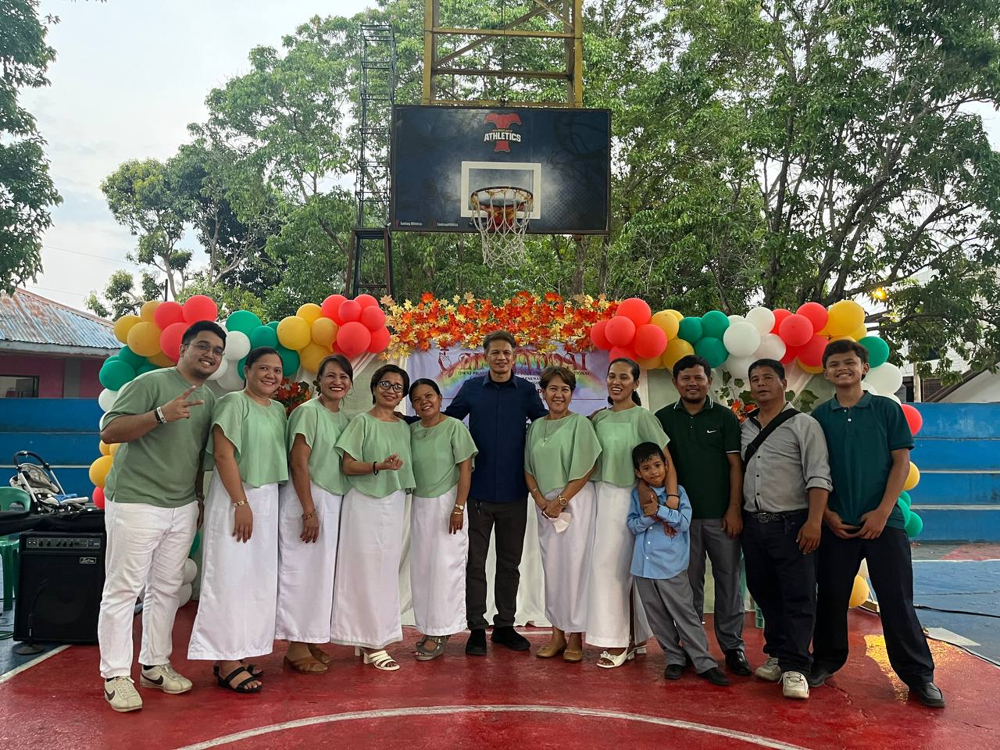
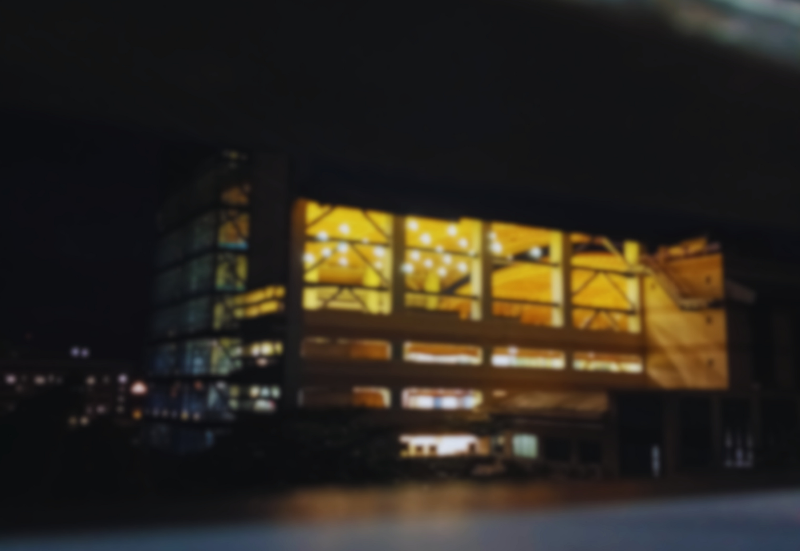
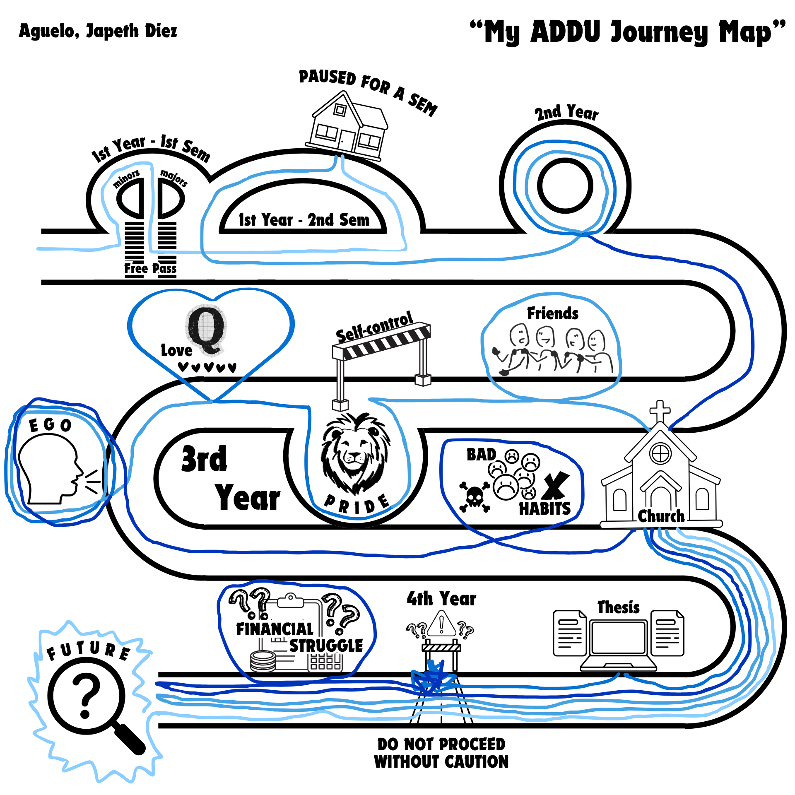
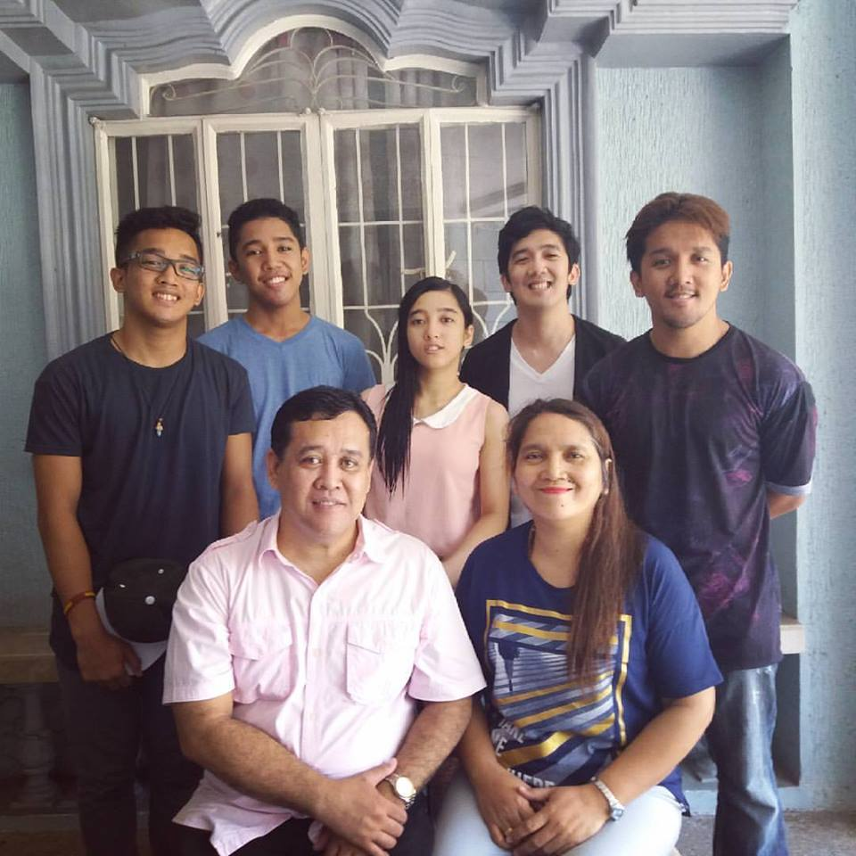
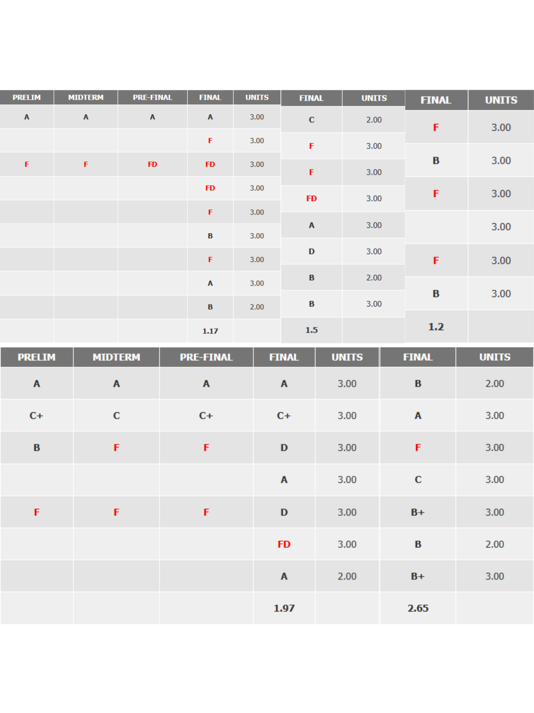
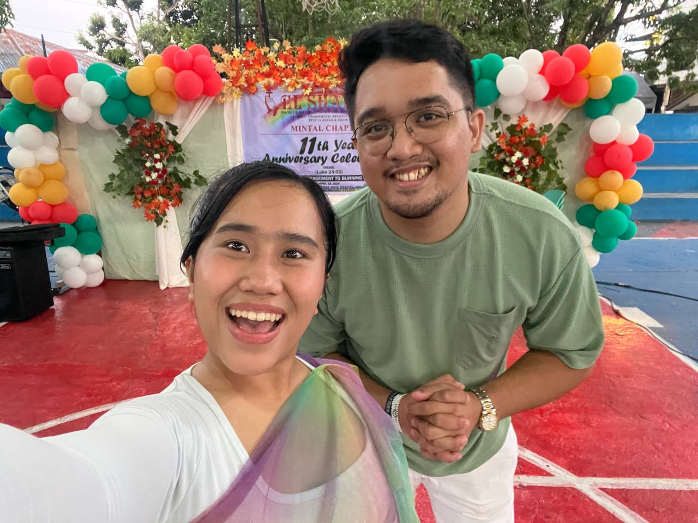
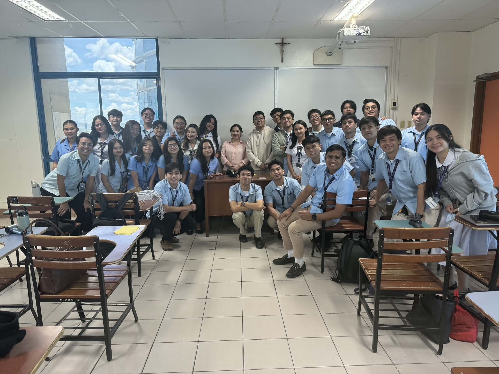

Ignatius in Manresa
I reflected on St. Ignatius in Manresa, where prayer, struggle, and grace shaped his discernment. His life there taught me that spiritual growth often happens in pauses we did not choose.

SIP Portfolio
This portfolio tells the story of my SIP class experience: a journey of faith, setbacks, discernment, healing, and purpose. It captures how my struggles reshaped my identity and how I am learning to become God's instrument of peace.



About Me

I am a graduating BS Information Technology student from Ateneo de Davao University. I was first drawn to cybersecurity, but over time I grew deeply interested in web development and eventually learned full-stack fundamentals.
I now hope to build digital solutions that can help both the environment and communities in practical ways. Even if I fell behind academically at different points, I chose to keep moving, survive each challenge, and start again with faith and discipline.
I started college in 2020, right when the pandemic disrupted the normal rhythm of student life. What I thought would be a straight path became a much longer and harder journey, and my college years were stretched into six years because of the struggles that came with it. The delay did not end my purpose; it refined it. Through those difficult years, I learned to adapt, rebuild my discipline, and keep choosing growth even when progress felt slow.
My Activities
I reflected on St. Ignatius in Manresa, where prayer, struggle, and grace shaped his discernment. His life there taught me that spiritual growth often happens in pauses we did not choose.
Consolation is the inner movement that draws me toward God through peace, trust, hope, humility, and purpose. In my own life, this appears as the quiet assurance that God remains present even in failure and uncertainty.

Desolation is the inner movement that pulls me toward fear, shame, restlessness, and discouragement. I experienced this through obsessive guilt and self-doubt that drained my peace and confidence.

I learned to discern by observing what follows each inner movement: does it lead to lasting peace, humility, and love, or to agitation and paralysis? With prayer, reflection, guidance, and honest self-awareness, I began choosing what leads me closer to God.

AdDU Journey

Conversion Story
My conversion story is my movement from image-based identity toward faith-based identity. It is the process of being broken by failure, then rebuilt through truth, humility, and God's mercy.
There was a time when I believed I had everything under control. I was raised in a deeply faithful family and known as a good son and a consistent achiever. My identity was built on excellence, discipline, and the image I projected to others.
During my second year in college, I slowly lost control of my responsibilities. Online classes became difficult, I stopped showing up, and I hid the truth from my family. For the first time in my life, I experienced major academic failure, including an F.
Eventually, I confessed everything to my family. That moment shattered the identity I had built. I felt guilt, shame, and fear, and my pride prevented me from asking for help. I became withdrawn, anxious, and full of self-doubt.
Yet even in that darkness, I never fully lost faith. Returning to our Catholic ministry reminded me that God never left me. I realized that my worth is not defined by success, but by God's enduring love.
Like St. Ignatius, I was brought into a pause I did not choose. Through discernment, prayer, and reflection, I began to see clearly. What once broke me has begun to shape me into who I am called to become.






My Class and Ma'am Margie | Class 20-008
With Ma'am Margie as our adviser, I initially felt anxious knowing she was the Dean, and I was afraid of disappointing her in class. However, as I listened and engaged more, I learned so much from her, especially through the reflections, which truly resonated with me. I believe these experiences will help me become more authentic and continue growing in my Catholic faith.
I was also placed with students from another course, but it turned out to be a positive experience. The atmosphere was welcoming, and I realized they would have been my classmates if I had chosen Accountancy.
As a class, we reflected deeply, grew together, and supported one another through every challenge and milestone of our final year at Ateneo de Davao University.
Passion Plan
I am becoming the person God calls me to be, striving each day to grow in faith and purpose. I desire to be His instrument of peace, beginning within myself and extending that peace to my surroundings and the people around me.
What drives me forward is my love for my partner, my family, my friends, and the future I am working hard to build. I choose to live by values of humility, patience, faithfulness, and staying grounded no matter where life takes me.
Through my work and life, I hope to create systems and products that can genuinely help people and improve their lives.


Lord, I lift up my future into Your hands with hope and trust. I pray that I may continue to grow not only in my skills, especially in coding, but also in discipline and dedication, while staying active and healthy through sports.
Grant me the grace to develop self-control and patience, especially in times of struggle and uncertainty. Guide me to remain grounded and humble, to accept my mistakes, and to live a life rooted in integrity and truth.
May I become successful not for my own glory, but so I may provide for my family, bless them, and serve others generously in Your name. Help me strengthen our ministry so it may continue to grow and serve others faithfully. Amen.
Short Term (1-3 years): Strengthen my coding foundation, stay disciplined through sports, and continue developing self-control, patience, and consistency while staying grounded in faith.
Mid Term (4-10 years): Establish myself in the tech industry and build projects that help people in meaningful ways while giving back through service, compassion, and integrity.
Long Term (10-20 years): Become a successful full-stack developer and a generous servant-leader who supports family, helps communities, and reflects God's blessings through peace, service, and love.

My People
My Personal Reflection
I have been a man of God since birth, raised in a family that sincerely praised and worshiped Him, faithfully attending Sunday Mass to receive the Holy Eucharist.
As I matured and began to face the truths of the world, my desolations took the form of obsessive guilt that slowly ate away at my peace, often leaving me restless mentally and spiritually.
Yet amid these desolations, my consolation remains the steady faith that God is always with me, and that His plans for my life are good and purposeful.
Growing in discernment helps me choose trust over fear, become more grounded and ethical as a future professional, and transform my struggles into compassion for others.
What once broke me is now shaping who I am becoming.

{kind=link}
{kind=link}
{kind=link}